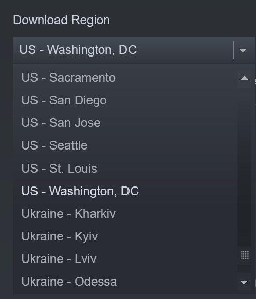

English
English
 Ελληνικά
Ελληνικά
CDN Regions¶
Note
As of 2024-10-04 it appears that it is no longer possible to choose a CDN region in Steam. It is however still possible to choose a region for logging into Steam.
Valve maintains CDNs in various regions for Steam, which are identified internally as a CellId. This is a list of the currently known CDN regions for Steam, pulled directly from the Content Server Directory Service.
The Download Region setting in Steam will display a large number of regions, however the majority of them do not exist. The only ones that exist are the ones included in this page. In addition, setting an override region will have no effect on which download region your client will use. Steam will always determine which download region to serve you from, based on some unknown geo-location criteria.

Please note that this list is non-exhaustive, and likely inaccurate, as Valve may potentially change them in the future.
| Cell Id | Short | City |
|---|---|---|
| 0 | Use Geolocation | |
| 1 | ord | Chicago |
| 4 | lhr | London |
| 5 | fra | Frankfurt |
| 14 | par | Paris |
| 15 | ams | Amsterdam |
| 25 | gru | Sao Paulo |
| 31 | sea | Seattle |
| 32 | tyo | Japan |
| 33 | hkg | Hong Kong |
| 35 | sgp | Singapore |
| 38 | waw | Poland |
| 40 | mad | Madrid |
| 50 | atl | Atlanta |
| 52 | syd | Sydney |
| 63 | iad | Washington, DC |
| 64 | lax | Los Angeles |
| 65 | dfw | Dallas Fort-Worth |
| 66 | sto | Stockholm |
| 92 | vie | Vienna |